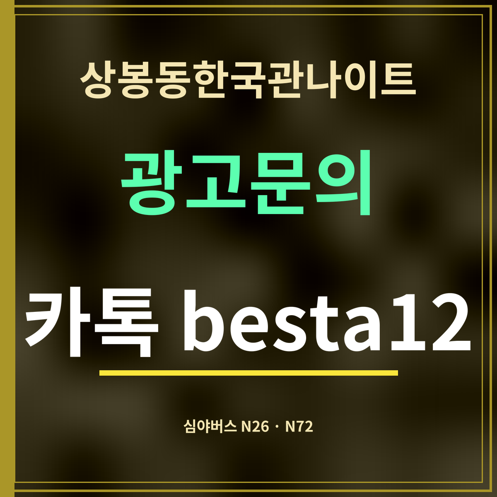

상봉동한국관나이트 귀가 방법, 심야버스 N26·N72 타는 곳
제휴 없는 정보 안내입니다. 정류장과 노선은 카카오맵 정류장 정보(2026년 9월 27일 확인)를 옮겼습니다.

핵심 3줄
① 심야버스는 망우역(중) 정류장(07-002)에서 탑니다. ② 상봉동한국관나이트에서 직선 180m입니다. ③ 서는 심야 노선은 N26과 N72 두 개입니다.
① 심야버스는 망우역(중) 정류장(07-002)에서 탑니다. ② 상봉동한국관나이트에서 직선 180m입니다. ③ 서는 심야 노선은 N26과 N72 두 개입니다.
정류장 정보
- 정류장 이름
- 망우역(중) — 도로 가운데 중앙버스정류장
- 정류장 번호
- 07-002(서울) · 07002(경기)
- 가게에서 거리
- 직선 180m
- 서는 심야버스
- N26, N72
- 그 밖의 노선
- 일반 노선 24개(201·241·2015·165·1330-2 등)
심야버스를 탈 때 순서
- 나오기 전에 지도 앱이나 서울시 버스 정보에서 N26·N72의 그날 도착 예정 시각을 봅니다. 심야버스는 배차 간격이 깁니다.
- 가게에서 망우로 쪽으로 나와 망우역(중) 정류장으로 갑니다. 중앙정류장이라 횡단보도를 건너야 합니다.
- 내리는 곳이 두 노선 중 어디에 가까운지 미리 정해 둡니다. 노선이 다니는 길은 지도 앱의 노선 정보로 확인하세요.
- 버스를 놓쳤다면 무리하게 뛰지 말고 다음 차 시각을 다시 봅니다. 추운 날에는 정류장에서 오래 기다리지 않도록 시각을 맞춰 나오세요.
차를 가져왔다면
술을 마셨다면 운전하지 않습니다. 운전이 금지되는 기준은 혈중알코올농도 0.03% 이상입니다. 차를 두고 심야버스로 가거나 대리운전을 부르세요. 기준과 처벌은 음주운전 기준 정리에 따로 적었습니다.
자주 묻는 것
심야버스는 어디서 타나요?
망우역(중) 정류장(07-002)입니다. 상봉동한국관나이트에서 직선 180m입니다.
어떤 심야버스가 서나요?
N26과 N72 두 노선이 섭니다(카카오맵 정류장 정보 기준).
몇 시에 오나요?
운행 시각은 날마다 다를 수 있어 여기에는 적지 않았습니다. 지도 앱이나 서울시 버스 정보에서 그날 도착 예정 시각을 확인하세요.
한 줄 정리: 상봉동한국관나이트에서 늦게 나오면 180m 앞 망우역(중)에서 N26·N72를 탑니다.
낮이나 저녁 버스는 버스로 가는 길을 보세요.